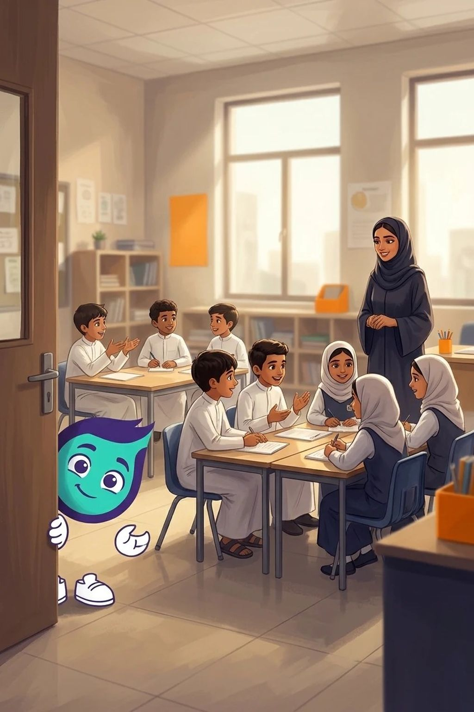

O
Omar
A
Ahmed
S
!
Sara
▤
Tablets
Sara
"Miss, I still don't understand."
←
Adventure 1 · Grade 5 Math
Different Needs, Same Classroom
12:00
/ 40
Watch
Decide
Discover
Challenge
Share
Reward
Unlock
↺
✓
+5
2
◎
1
TA
1
Sara
Ahmed
Omar
Student needs help
28 min left
Sara is stuck on adding fractions.
She has written 1/4 + 2/4 = 3/8. What do you do first?
Need help
Support · work beside her
5 min
See why
Explanation · ask her to talk it through
4 min
Move on
Continue · come back later
0 min